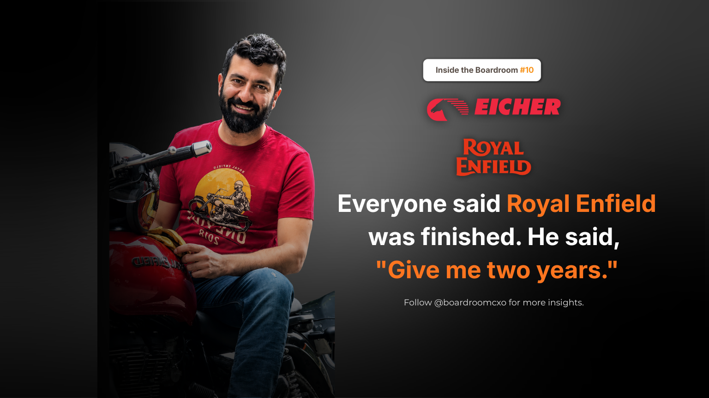

In 2000, a 26-year-old took charge of a motorcycle business his own family was preparing to shut down.
He asked his father for two years.
Royal Enfield was selling about 2,000 motorcycles a month against a plant that could build 6,000. Engines leaked oil. Dealers had stopped believing. A brand that had been sold in India since 1949 was dying quietly in Chennai.
Siddhartha Lal was not the obvious choice to fix it. No turnaround record. By his own account, the pull was simple. He could "eat, sleep, ride and talk motorcycles."
Fix the Machine Before You Touch the Market
Most executives handed a dying consumer brand reach for the marketing budget first. New campaign, new dealer incentives, a repositioning deck. Lal did the opposite. He spent four years in Chennai on cost and product, fixing the machine before touching the market.
That sequencing is the least glamorous part of the story and the most instructive one. A motorcycle that leaks oil cannot be rescued by a better advertisement. Dealers who have watched a brand fail for years will not be talked back into confidence, they have to be shown a product that works. Lal's four years in the factory were not a delay before the real turnaround started. They were the turnaround.
Then He Made the Company Smaller
Then he did what most leaders under pressure never do. He made the company smaller.
Eicher Motors was spread across 15 businesses and led none of them well. Between 2005 and 2006, 13 of those businesses were sold or shut, leaving only motorcycles and trucks. Tractors, the family's original business, went to TAFE. The word going around the market was that the Lals were selling out.
They were not. He was betting that leading one category beats being average in fifteen.
Selling the business your family built its name on is a different order of decision than fixing a leaking engine. It invites exactly the reading the market gave it: retreat. Lal's actual logic ran the other way. A conglomerate that is present in fifteen categories and dominant in none has no real position to defend anywhere. Concentrating the company down to two businesses, one of which he had already spent four years rebuilding from the ground up, was not surrender. It was the only way to convert a fixed product into a market-leading one.
Where Most Leadership Playbooks Get This Wrong
The instinct under pressure is almost always to diversify risk, to keep multiple businesses alive so that no single failure sinks the company. Lal's move inverts that logic completely. He concentrated risk on purpose, on the one business he had already proven he could fix, and cut loose everything else, including a business, tractors, that carried the family's own founding history.
That is a harder call than it sounds from the outside. Exiting a struggling business you never built is a rational decision. Exiting the business your family is named for, at a moment when your other bet, motorcycles, has not yet proven itself at scale, is a bet on your own judgment over your own legacy. Most leaders protect legacy businesses well past the point the numbers justify it. Lal did not.
What the Numbers Say Now
In FY25, Royal Enfield sold over ten lakh motorcycles, crossing that mark for the first time in its history. Exports alone crossed one lakh units. Eicher Motors closed the year with revenue of ₹18,870 crore and profit after tax of ₹4,734 crore.
Twenty-five years on, Lal is chairman of Eicher Motors. The company he shrank to two businesses is now built almost entirely on the one he spent four unglamorous years fixing before he let anyone see it.
The Boardroom Read
Shrinking a business is not the same as giving up on it.
Sometimes it is the only way to save it. The two decisions that actually turned Royal Enfield around, in order, were the least visible ones: four years of factory-floor discipline before any market-facing move, and then a deliberate reduction in scale that read as retreat but was in fact a concentration of resources on the one bet the leader had already proven out. Neither decision would have made a good headline in year one. Both are the reason there is a headline worth writing twenty-five years later.
Frequently Asked Questions
Why did Siddhartha Lal take over Royal Enfield in 2000?
At 26, Siddhartha Lal took charge of Royal Enfield when his own family was preparing to shut the motorcycle business down. He asked his father for two years to fix it. He was not the obvious choice, with no turnaround record, but by his own account he was drawn to the job because he could eat, sleep, ride and talk motorcycles.
What condition was Royal Enfield in when Siddhartha Lal took charge?
Royal Enfield was selling about 2,000 motorcycles a month against a plant built to produce 6,000. Engines leaked oil, dealers had stopped believing in the brand, and a motorcycle sold in India since 1949 was dying quietly out of its Chennai factory.
Why did Siddhartha Lal spend four years in Chennai before marketing Royal Enfield?
He judged that no marketing campaign could fix a motorcycle that leaked oil and that dealers no longer trusted. He spent four years in Chennai on cost and product, fixing the machine itself, before shifting attention to how the brand was sold or positioned in the market.
Why did Eicher Motors sell 13 of its businesses between 2005 and 2006?
Eicher Motors was spread across 15 businesses and led none of them well. Between 2005 and 2006, Lal sold or shut 13 of those businesses, leaving only motorcycles and trucks, on the bet that leading one category beats being average across fifteen.
What happened to Eicher's original tractor business?
Tractors, the business the Eicher Group had been built on, were sold to TAFE as part of the 2005-2006 restructuring. At the time, the market read the sell-offs as the Lal family exiting the business. They were not; they were concentrating it.
How large is Royal Enfield today?
In FY25, Royal Enfield sold over ten lakh motorcycles, crossing that mark for the first time in its history, with exports alone crossing one lakh units. Eicher Motors closed the year with revenue of ₹18,870 crore and profit after tax of ₹4,734 crore. Siddhartha Lal is now chairman of Eicher Motors, twenty-five years after taking charge.
What is the leadership lesson from Siddhartha Lal's turnaround of Royal Enfield?
Shrinking a business is not the same as giving up on it. Lal deliberately made Eicher Motors smaller, selling 13 of 15 businesses including the family's original tractor line, to concentrate leadership attention on the one category, motorcycles, where the company could actually win.
Related Reading
C K Venkataraman: How Tanishq Fixed a Decade of Being Wrong About India
Read → R · 02 Founder Leadership · July 2026Refused to Blink: The Boardroom Lesson Behind Marico's War With Hindustan Lever
Read → R · 03 Founder Leadership · August 2026Ramesh Chauhan Sold Thums Up to Build Bisleri From Scratch
Read →Turning around a legacy brand, or deciding what to cut to save it?
The operators who can run a factory-floor fix for four unglamorous years, then make the harder call to shrink the business, are rare. We place the leaders who can do both, not just one.
Brief Us on a Mandate